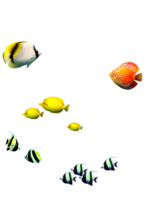
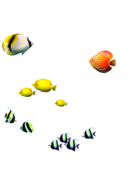

潛水
風格迥異的日、月島都有潛水點，分別在日島西邊小鹿島以及月島東南邊沙灘；擁有令人驚豔的透明度、色彩斑斕的珊瑚礁，幸運的話還能與海龜共遊，由專業教練帶領讓您一來就愛上。

 


風格迥異的日、月島都有潛水點，分別在日島西邊小鹿島以及月島東南邊沙灘；擁有令人驚豔的透明度、色彩斑斕的珊瑚礁，幸運的話還能與海龜共遊，由專業教練帶領讓您一來就愛上。
平價與豪華絕不衝突！
遊艇編號XW001，110呎的船身，超群穩定性、豪華舒適座椅與席夢思床的夢幻組合搭配海上全景視野，美景盡收眼底。
(158則評論)
豪華


在明島釣魚不只是單一選擇，您可以乘上XW001距離月島東邊30公里附近，在那裡有機會釣到壽司四大天王的冰見寒鰤，或是日島周遭有午魚現蹤，大自然的餽贈等您來收穫。
(158則評論)
船釣
在日島，浮潛絕對是熱門活動，豐富的海洋生態，讓潛水愛好者沉浸在繽紛燦爛的海底世界，享受大自然的海底奇觀
(158則評論)
潛盔


划SUP是非常好的運動，能使用到的平時不太鍛鍊到的肌肉，同時也是與親朋好友遊玩的好選擇。
(158則評論)
單人
實際觀察體驗與海洋生物的零距離接觸，讓您更親近海洋，進而了解海洋生態保育之觀念。
日島海岸是綠蠵龜產卵的去處，讓我們保持距離守候佳音。
(158則評論)
More Comments色彩斑斕的珊瑚需要你我的守護，歡迎一起參與復育活動。
(158則評論)
More Comments
(158則評論)
水肺